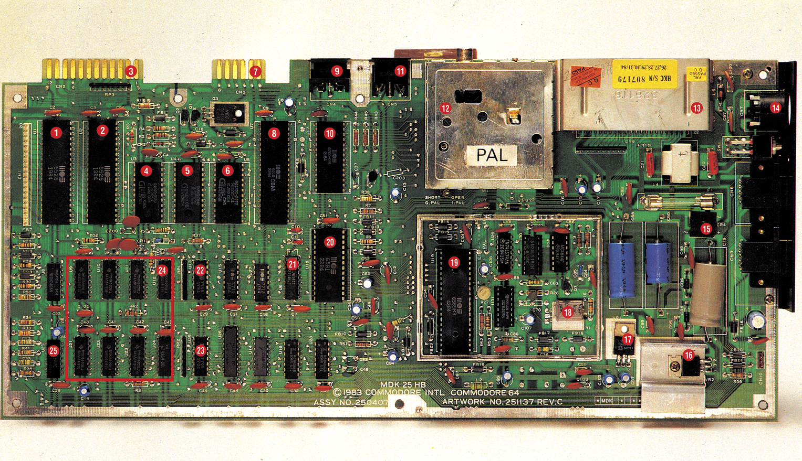
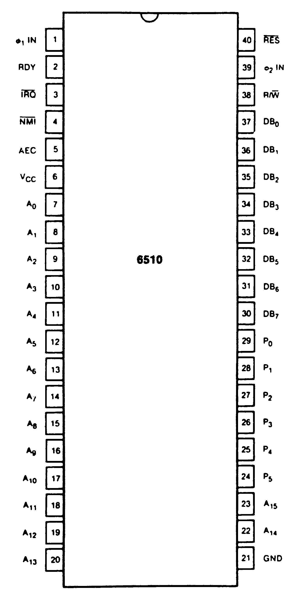
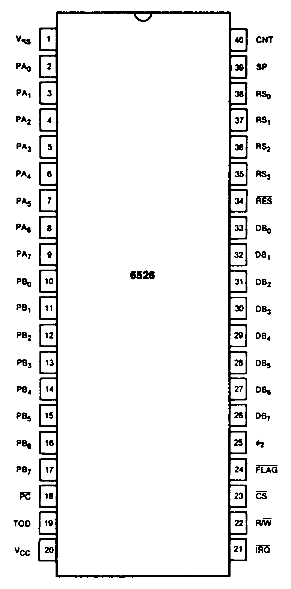
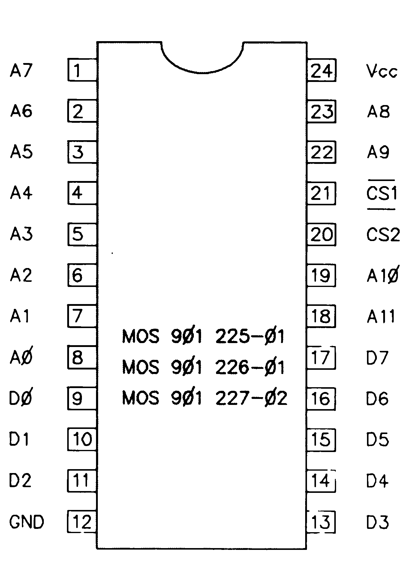
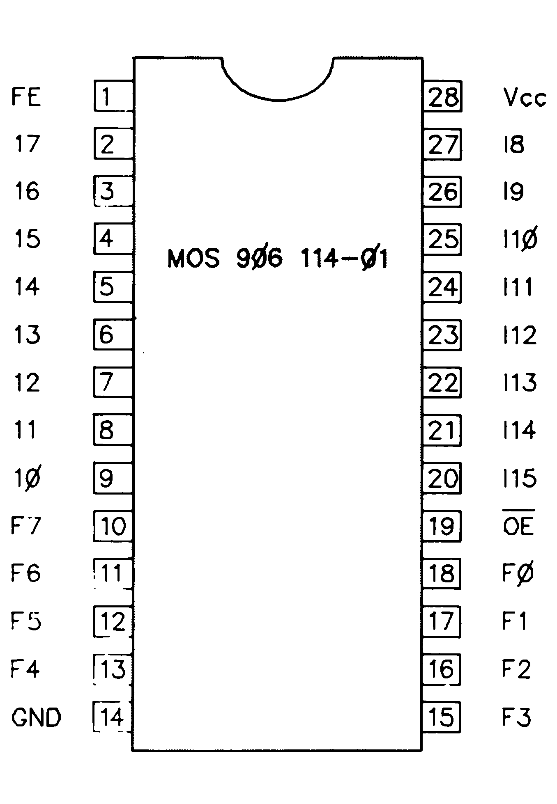
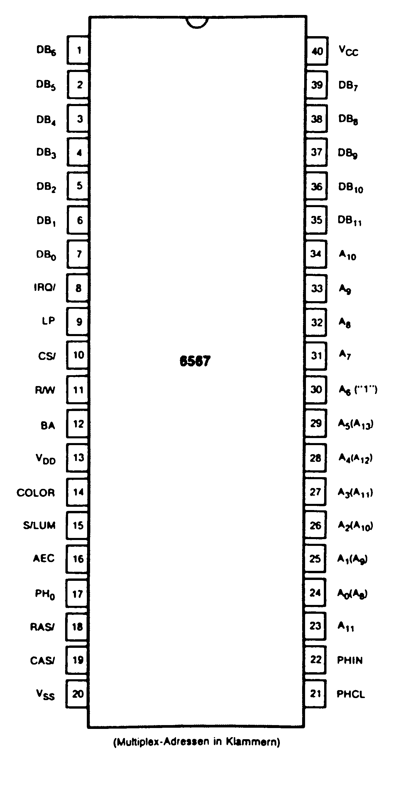
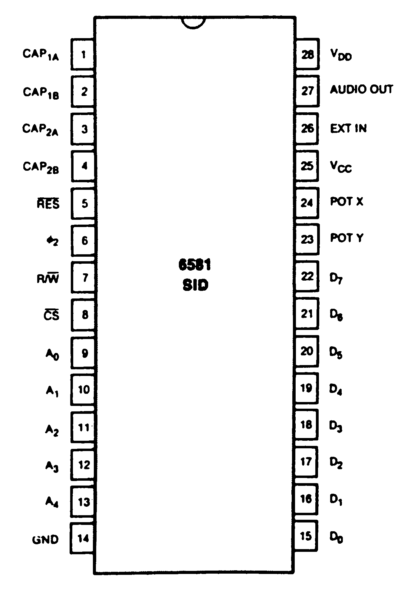

Die Axt im Haus (Teil 2)
Nicht jeder Defekt an Computer oder Peripherie muß gleich mit einem längeren »Krankenhausaufenthalt« bei einer Fachwerkstatt enden. Dieser Kurs hilft Ihnen, kleinere Fehler selbst zu beheben.
Schnell kann folgender Fall eintreten: Sie schreiben gerade mit Ihrem Textsystem an einem Brief oder Manuskript, das schon seit gestern hätte fertig sein sollen. Plötzlich wird Ihr Bildschirm schwarz. Ihr erster Gedanke: So ein..., der Termin kann nicht eingehalten werden. Und die bereits auf Diskette gespeicherten KByte noch einmal auf der Schreibmaschine eintippen kommt schon gar nicht in Frage. Warum muß der Computer immer zum ungünstigsten Zeitpunkt ausfallen? Also Termin vergessen, Computer einpacken und zum nächsten Fachhändler, der frühestens in zwei, drei Wochen ...
Doch vielleicht ist es nur ein kleiner Fehler, den Sie möglicherweise selbst beheben können. Dieser Kurs hilft Ihnen, zu erkennen, ob es in Ihrer Macht steht, dem Computer die Stirn zu bieten. Fühlen Sie sich ihm jedoch hoffnungslos unterlegen, können Sie wenigstens den Fehler lokalisieren und so den Werkstätten unnötige Zeit für die Fehlersuche und sich selbst damit Kosten sparen.
Wir werden diesmal erfahren, an welchen Symptomen man defekte Halbleiterbausteine erkennt und lokalisiert. Wenn Sie über die geeigneten Mittel verfügen (Lötkolben, Entlötspitze), können Sie die fehlerhaften Bauteile selbst austauschen. Wenn nicht, ist die Werkstatt durch eine genaue Fehlerangabe entlastet.
Ausführliche Schaltpläne zum C 64 finden Sie in der Mitte dieser Ausgabe auf den »64'er-Extra«-Seiten. Die Lage der einzelnen Bauteile und Komponenten wird aus Bild 1 ersichtlich.

Doch zuerst müssen wir die Hauptplatine des Computers freilegen. (Vergessen Sie nicht, zuvor den Stecker aus der Steckdose zu ziehen!) Dazu ist zuerst der Gehäusedeckel und die Tastatur zu entfernen. Ist das geschehen, lösen Sie bitte die drei Schrauben am Gehäuseboden.
Achtung: Jeglicher Eingriff in die Geräte bringt den Garantie-Anspruch zum Erlöschen.
Heben Sie den Gehäusedeckel und die Tastatur vom Gehäuseboden ab. Trennen Sie die Verbindung zwischen Tastatur und der Power-LED von der Hauptplatine. In Bild 1 ist besagte Hauptplatine mit der genauen Lage der wichtigsten Bausteine zu sehen.
Stromausfall?
Der erste Fehler, der auftreten kann, ist eine fehlende Spannungsversorgung der Bauteile Wenn Sie anhand der Fehlersuchanleitung aus Ausgabe 8/86 die Sicherungen überprüft und für funktionsfähig befunden haben, ist der Defekt in der Hardware des Computers zu suchen. Dazu benötigen Sie ein Multimeter oder einen Logiktester und, wenn vorhanden, ein Oszilloskop.
Sehen wir uns zunächst das Netzteil an. Dies ist der Schaltungsteil, der sich im rechten Viertel der Hauptplatine befindet.
Testen Sie, ob am Kondensator C2l (unterhalb des Expansion-Ports) 10V Wechselspannung anliegt. Diese Spannung muß ebenso an den Pins 6 und 7 der Netzbuchse (CNT7) vorhanden sein. Fehlt sie, ist die Spule L4 (das graue Kästchen rechts unterhalb des Expansion-Ports) defekt. Überprüfen Sie den Netzschalter und die Verbindungen der Netzsteckerbuchse. Hilft das nicht, so ist ein Auswechseln des Netzteils unumgänglich.
Ein weiterer Fehlerherd können die Kondensatoren C88, C89, C90, die Diode CR5 oder der Spannungsregler VR1 sein (11,76V an Pin 2 des Reglers VR1).
Die Windung der Spule L5 kann unterbrochen sein. Möglich ist auch, daß die Spannung von zirka 5V am positiven Pol des Kondensators C91 (unterhalb des Joystickports 1) fehlt. Des weiteren hängen noch folgende Bauteile mit der Spannungsversorgung zusammen: Die Spannungsregler VR1 und VR2, die Spule L2 sowie die Kondensatoren C55, C56, C65, C66, C67, C68, C74, C82, C84, C102 und C103. Stimmen alle Spannungen und sind die Bauteile und Leiterbahnen in Ordnung, wird ein neues Netzteil erforderlich.
Die LED brennt, aber...
...es tut sich nichts. Suchen wir also den Fehler in den zur Steuerung des Systems nötigen Bausteinen. Hier bietet sich zuerst der Prozessor 6510 an (Steckplatz U7). Eine Zeichnung des Gehäuses mit den Anschlüssen geht aus Bild 2 hervor.

Nehmen Sie das Meßgerät zur Hand und überprüfen Sie, ob an folgenden Pins des Prozessors Impulse (Blinken des Logiktesters oder Ausschlag des Meßgerätes) anliegen: 3, 7 bis 20, 22, 23, 30 bis 39. Bei falschem Puls an Pin 3 tauschen Sie den CIA 1 (Complex Interface Adapter) auf Steckplatz U1 aus (Bild 3 zeigt die Anschlußbelegung). Sollte der Prozessor trotzdem nicht arbeiten, legen Sie die Meßspitze an Pin 40 (Reset) des Prozessors und schalten den Computer kurz aus und wieder ein. Für kurze Zeit (1 bis 2 Sekunden) muß das Signal auf Low-Pegel und dann wieder auf High gehen.

Bekommt das IC überhaupt Spannung? Messen Sie an Pin 6 von UT, ob die Betriebsspannung anliegt.
Prüfen Sie die Spannung an Pin 4 von UT, ob ein High-Potential anliegt. Bei falschem Signal kann ein versuchsweises Austauschen des CIA 2 (Steckplatz U2) Abhilfe schaffen. Es wäre auch denkbar, daß die Spannung der Pins 27 bis 29 (UT) zu niedrig ist. Ist all dies korrekt, muß der Prozessor ausgetauscht werden.
Ist er aber in einwandfreiem Zustand, so kann das Kernel-ROM (UA, Bild 4), der PLA (UI7, Bild 5) oder der VIC (U19, Bild 6) eine mögliche Fehlerquelle sein.



Farbausfall, Bildausfall . . .
Plötzlich sehen Sie nur noch ein monochromes Bild. Die Fehlerquelle: das IC U19. Überprüfen Sie, ob an Pin 14 ein Signal anliegt. Sollte das nicht der Fall sein, muß der Video-Prozessor (Ul9, Bild 6) ausgetauscht werden. Stimmen die Farben nicht, so ist die Oszillatorfrequenz (Pin 10 von Baustein U3l) auf 14.31818 MHz zu kontrollieren. Der Trimmer R27 dient dem Frequenzabgleich.
Sollte kein Bild vorhanden sein, ist Pin 15 des VIC (U19) auf High-Pegel zu prüfen. Bei fehlerhaftem Signal tauschen Sie den VIC aus.
Überprüfen Sie nun bitte den Pin 27 des Sound-Chips (U18, Bild 7). Sollte an diesem Pin kein Signal anliegen, tauschen Sie den Sound-Chip aus.

Liegt das Signal korrekt an, sind die Spannungen und Bauteile, die mit dem Transistor Q8 in Verbindung stehen, zu testen.
Damit wären wir für diese Ausgabe wieder am Ende. Die nächste Folge wird die noch ausstehenden Fehlerquellen des C 64 behandeln.
(dm)Info: Reparaturanleitung Commodore 64, Markt & Technik Verlag AG, Hans-Pinsel-Str. 2, 8013 Haar
Rat und Tat, Technischer Kundendienst GmbH, Theodor-Althoff-Str.2, 4300 Essen, Tel. (0201/35923-27)